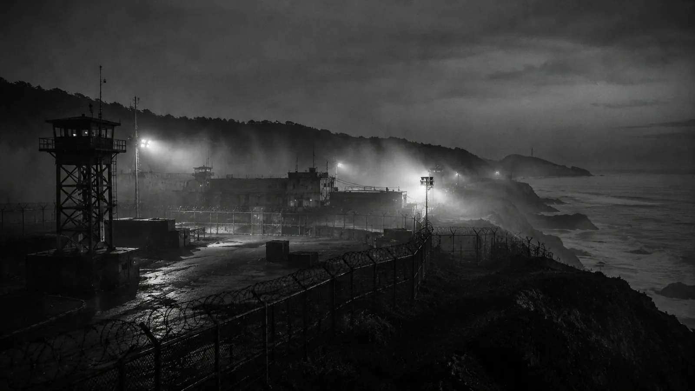
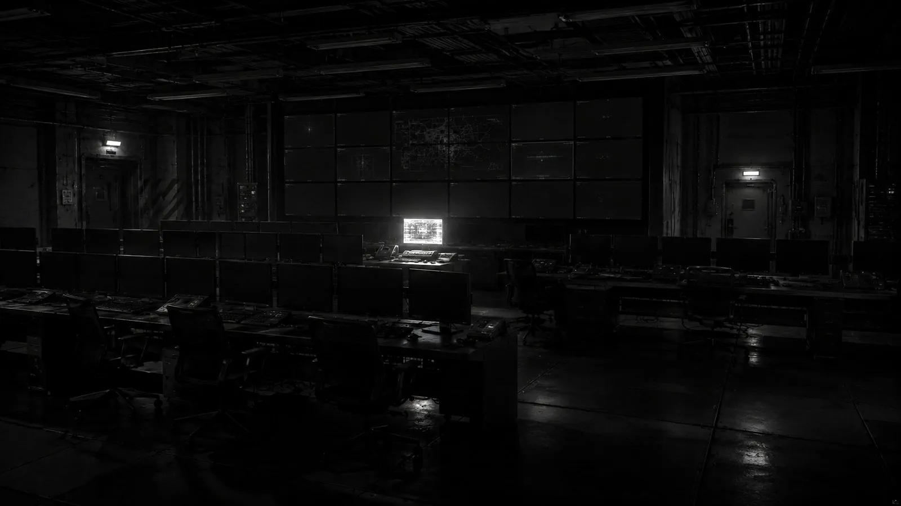

한 장의 기록에서,
이 세계의 이야기가 시작됩니다.
TIU / WORLD ARCHIVE
세상은 변했다.
일상은 계속된다.
매일 조금씩 달라진 규칙 속에서,
사람들은 살아갈 방법을 선택한다.
01 / WORLD OVERVIEW
안전하다고
기록되는 나라.
세상은 한 번에 무너지지 않았습니다.
변이와 봉쇄, 달라진 규칙 속에서도 일상은 계속됩니다.
TIU의 이야기는 거대한 진실보다 작은 기록에서 시작됩니다.
한 장의 면회 예약지, 사라진 주소, 이유 없는 통행 거절.
그 사이에는 여전히 살아가는 사람들이 있습니다.
02 / LIFE WITHIN THE WALL
방벽 안쪽의 이야기.
검문소를 지나고, 면회를 기다리고.
재난 이후에도 하루는 이어집니다.
03 / START READING
처음 읽을 기록.
세계관의 일곱 가지 축
- 01
변이와 감염
인간과 사회를 바꾸는 미확인 재난
- 02
방벽과 봉쇄
일부 지역은 보호와 통제의 경계가 되었다
- 03
기록과 행정
사람은 살아 있어도 기록상 사라져 보일 수 있다
- 04
국가별 대응
같은 재난도 국가마다 다르게 처리된다
- 05
회색 경제
막힌 제도 사이에서 브로커와 비공식 단체가 생긴다
- 06
인간관계
사랑과 가족은 통제 사회가 계산하기 어려운 변수다
- 07
도시전설
진실은 공식 발표보다 소문으로 먼저 퍼진다

YOUR NEXT RECORD
이 세계를,
당신의 선택으로.
TERMINAL SESSION
한국지부 지휘관이 되어 카드를 선택하고,
봉쇄·자원·신뢰·평가 사이에서 결정을 내립니다.